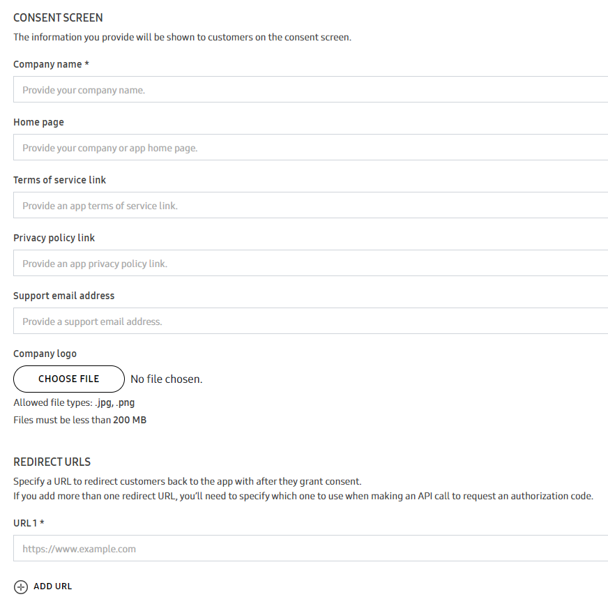
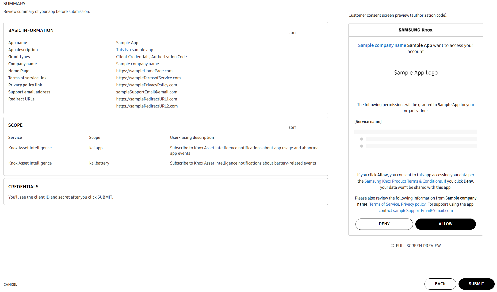
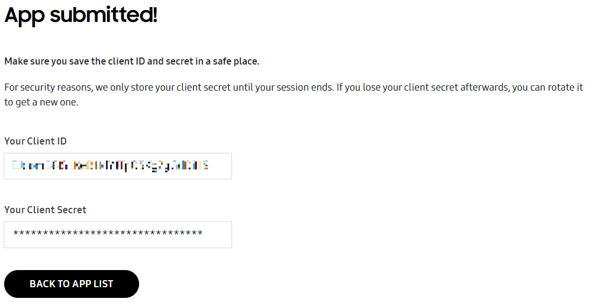

Register new app
Last updated June 13th, 2024
This document is new for the Knox cloud services 24.06 UAT.
This topic provides information on how your app can access Knox cloud services APIs, either for yourself or on the behalf of your end customers. To connect an app to Knox cloud services using APIs, you need an access token. And, to generate an access token, you must first obtain a client ID and a client secret from the Knox Developer portal for each of your apps, the following section guides you on this.
You can also register your app through client management operations in Knox OAuth 2.0 Authentication API, contact Support for more information on this.
Supported services
The Knox cloud services which currently support OAuth 2.0 are:
- Knox Asset Intelligence
- Knox MSP Portal API
- Knox Webhook Notification
Before you begin
Ensure you can view the Cloud Apps menu on the navigation pane of Knox Developer portal. If you’re not able to view the menu, please email knoxapi@samsungknox.com with the subject ‘Cloud Apps feature’, and include the following details :
Company name
Country
Email address associated with your Samsung Knox account
List of Knox cloud services APIs you want to use
Description of your use cases
You can also create a Support ticket to request access to the Cloud Apps menu.
Generate a client ID and client secret
Sign in to the Knox Developer Portal.
Go to WEB INTEGRATIONS > Cloud Apps.
Click REGISTER NEW APP.
The first time you register an app, the Knox Cloud API License Agreement appears. Review the agreement, confirm you’ve read it, and click ACCEPT to consent.
Enter basic details about your app like App name and App description. App name is required.
If you choose the Authorization code grant type in the next step, then the App name you specify is included in the consent screen that is shown to your customer.
Select the appropriate GRANT TYPES. You can select multiple options, depending on your use case.
Select Client credentials if your app needs access to your own Knox cloud services This is a two-legged OAuth 2.0 flow.
Select Authorization code if you are a Unified Endpoint Management (UEM) partner and your app requires access to Knox cloud services on behalf of a customer. This is a three-legged OAuth 2.0 flow.
Also provide the following details which are displayed on the consent screen shown to customers:
Company name —Enter the name of your company, it is a required field.
Home page —Enter the home page link of your company or app.
Terms of service link —Enter the link where your customers can go to view the terms of service ff your company.
Privacy policy link —Enter the link where your customers can go to view the privacy policy link of your company.
Support email address —Enter the support email address of your company.
Company logo —Upload your company logo in .jpg or .png format. Ensure that the file size is less than 200 MB.
REDIRECT URLs —Enter the URLs to redirect your customers to your app after they grant consent.

If you enter multiple redirect URLs using the ADD URL option, make sure to specify a preferred URL in your API call to get authorization code.
EXPIRATION TIME —Depending on the grant type selected, modify the following expiration times, if required.
Authorization code expiration —Enter a value between one and five minutes.
Access token expiration —Enter a value between one minute to 60 minutes.
Refresh token expiration —Enter a value between 60 minutes to 90 days.
You can preview the consent screen that is shown to customers, with the details you specified.
Click CONTINUE after you finish providing your app information.
Click ADD SCOPE to list the scopes that your app needs. Scopes define the permissions available to an app.
On the Add Scope page, specify the following:
Select the Knox cloud services required for your app.

Select the required scopes from the options available and click ADD. Scopes are displayed based on the services you selected. After you’ve added the required scopes, click cross on the top-left corner.

If you want to delete any added scopes, select them and click REMOVE.

Click CONTINUE. Summary of the new app is shown, it includes the app information you’ve entered, the scopes you’ve selected, and the consent screen preview.

Go to CONSENT SCREEN > FULL SCREEN PREVIEW to see how the consent screen is presented to your end customers. The full preview shows additional details such as scopes and its descriptions.
Click SUBMIT. A client ID and client secret is issued for your app.

Copy and save your client secret. The client secret is displayed only till the current session is active, and will not be available after you exit the session. If you forget to copy it, see how to view or rotate the client secret in Manage registered apps.
Is this page helpful?